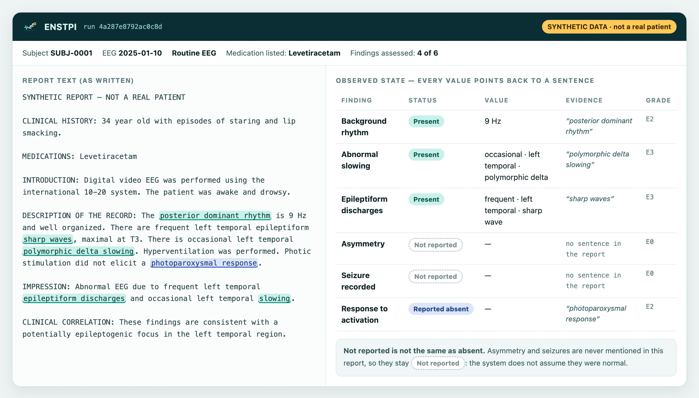
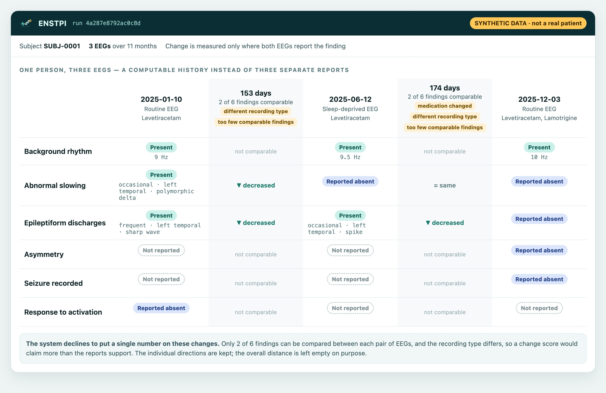
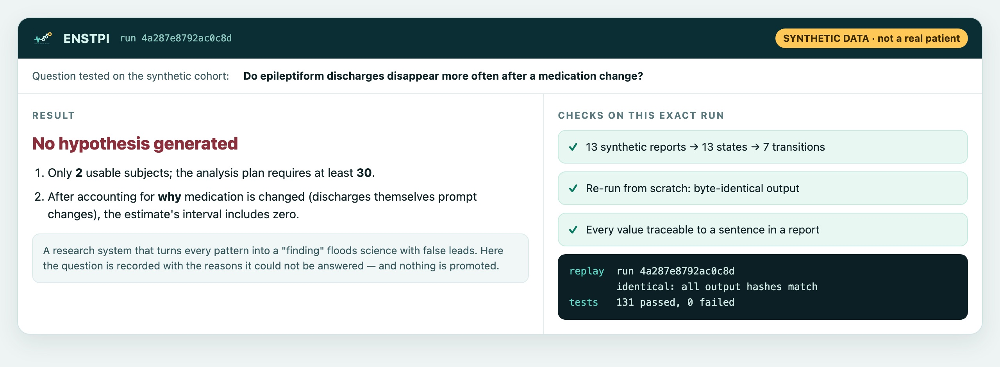

Can years of EEG reports become one honest, computable history?
A person with epilepsy may have several EEGs over the years, each read and reported on its own. ENSTPI tests whether those reports can be turned into one traceable history of what was observed. Each finding would be marked as present, reported absent, or simply never reported. Changes would be measured only where they can honestly be compared, and no conclusion would go further than the evidence allows.
The problem
EEG is read one examination at a time
Each EEG produces its own report. How one EEG relates to the next, and what changed in treatment or in the person's life between them, is usually held informally in the clinician's memory. It is rarely stored in a form that can be searched, compared, or checked later. Published studies show why a single examination is a weak unit.
Among patients whose EEGs eventually showed epileptiform abnormalities, the first recording showed them in 50% and the third in 84%.1 One normal-looking EEG does not mean the finding is absent.
In a population study of people with epilepsy, the cumulative yield of epileptiform abnormalities was 53% after the first EEG and 72% after the third.2
Patients failed to document 55.5% of the seizures recorded during video-EEG monitoring.3 Outcomes, too, are noisy.
So a single observation is uncertain, and the absence of a finding is especially weak. A history that carries this uncertainty with it, instead of hiding it, does not yet exist as a standard, computable object. That gap is what ENSTPI is built to test.
The research hypothesis
One central idea, four ways it could be wrong
A person's EEG reports, read together with what changed between them, can form a history of observed brain activity that is faithful to the source, reproducible, and honest about what it does not know. That history can carry information a single EEG does not.
Each part is stated so that it can fail. The analysis plan is to be registered before any real data is examined, and a locked half of the data stays unseen until then.
Reports are read as well as people read them
Turning report text into structured findings agrees with two trained human readers at least as well as the two readers agree with each other.
Wrong if: agreement is lower than human–human agreement for any main finding.
The history notices meaningful change
Changes that experts judge meaningful between consecutive EEGs are picked out better by the history than by simply comparing the reports' labels.
Wrong if: it does no better than the label comparison.
The history adds information
Adding the EEG history to the latest EEG and standard clinical facts improves prediction of a future outcome fixed in advance.
Wrong if: there is no improvement beyond the margin set in advance, or predictions become less well calibrated.
Observational answers agree with trials
Estimates drawn from routine records agree in direction with randomised trial results where those exist, and are never presented as stronger evidence than their design allows.
Wrong if: the direction disagrees, or any result is overstated.
What ENSTPI is not
- Not a diagnostic tool. It will never say "this person has epilepsy" or "start this medicine".
- Not a brain-health score. No single number summarises a person.
- Not a "digital twin". EEG reports cannot support that claim, and this project does not make it.
- Not a source of proven causes. Records of routine care can suggest a question, and the system says when they cannot answer it.
See it on synthetic data
Real output, invented patients
The three images below are taken from an actual run of the prototype. The reports were written by hand for testing and describe no real person. The values, statuses and refusals are exactly what the system produced.



Progress
6 of 15 milestones complete. The hard part is still ahead.
Everything completed so far is engineering, checked on synthetic data. None of the four hypotheses has been tested, because that needs real, de-identified EEG reports and independent human readers. Both are being arranged.
- Research question and four falsifiable hypotheses written downComplete
- EEG vocabulary grounded in an international standardComplete
- Every finding term resolved by a tool against the published HED-SCORE vocabulary for EEG; none typed by hand
- Report → evidence → observed state, on synthetic reportsComplete
- Present, reported absent, not reported and not assessable kept apart; every value traceable to its sentence
- Change over time, only where it can be comparedComplete
- Imprecise dates and missing findings are flagged instead of being filled in
- From a question to a hypothesis, or a reasoned refusal, end to endComplete
- Self-tests with planted traps: an association that only looks real is declined; reruns are byte-identical
- Real-data intake readyComplete
- Subject identities replaced by keyed pseudonyms before analysis; half of the subjects locked away for the final test; a quality report that needs no answer key
- Access to a public research EEG corpusIn progress
- Application for the Temple University Hospital EEG Corpus, a de-identified research collection
- Review of the vocabulary by two clinical neurophysiologistsPending
- Analysis plan registered before any real data is examinedPending
- H1: reading accuracy against two independent human readersPending
- H2: does the history notice meaningful change?Pending
- H3: does the history add information about future outcomes?Pending
- H4: do observational answers agree with randomised trials?Pending
- External validation at another site, including an Indian hospitalPending
- Beyond reports: raw EEG signal features, then research on controlled interventionsPending
If it succeeds
What it could make possible
None of the following is claimed today. Each follows only if the hypotheses above survive testing that has not yet happened.
A history, not a pile of reports
Years of EEGs for one person, read together: what was seen, what was never looked for, and what changed between visits. Every entry can be traced back to its sentence.
Research from records that already exist
Hospitals hold decades of EEG reports. If they can be read faithfully, they become a research resource without a single new recording.
Fewer false leads
Questions that routine records cannot answer are declined with reasons. Effort then goes to the questions that deserve a proper trial.
Results anyone can re-check
The same input always gives the same output, with its full trail. A reviewer months later can re-derive a result instead of trusting it.
A bridge to the signal itself
Later phases would add features from the raw EEG recording, checked against what the reports say, so that each source can audit the other.
A pattern beyond EEG
Any test that is repeated over a lifetime and reported in words faces the same problem. EEG in epilepsy is where the idea is tested first.
Who benefits, if it works
Medical science, patients, and the countries where most people with epilepsy live
Medical science
- Routine records become usable evidence, with the uncertainty of each observation kept visible.
- Questions are ranked by how answerable they are, so trials can be aimed where records cannot decide.
- Studies can be reproduced exactly, down to the sentence each result came from.
Patients
- Their history is read as a whole in research, not as isolated snapshots.
- Missing information is not mistaken for good news. "Not reported" is never treated as "normal".
- Better questions about treatment can reach the trials that answer them sooner.
ENSTPI is a research tool. Any benefit to patients would come through research findings that clinicians then evaluate, not through the tool itself.
Low- and middle-income countries
Around 50 million people worldwide have epilepsy, and nearly 80% of them live in low- and middle-income countries. Three quarters of people with epilepsy in low-income countries do not get the treatment they need. Yet up to 70% could live seizure-free if properly diagnosed and treated.4
- Works from report text, which many hospitals already have, with no special equipment.
- Runs on an ordinary computer, offline, so records never need to leave the hospital.
- Research about local populations, with validation planned at an Indian hospital rather than only in high-income cohorts.
Sources
References
- Salinsky M, Kanter R, Dasheiff RM. Effectiveness of multiple EEGs in supporting the diagnosis of epilepsy: an operational curve. Epilepsia 1987;28:331–4. doi:10.1111/j.1528-1157.1987.tb03652.x
- Baldin E, et al. Yield of epileptiform electroencephalogram abnormalities in incident unprovoked seizures: a population-based study. Epilepsia 2014;55:1389–98. doi:10.1111/epi.12720
- Hoppe C, Poepel A, Elger CE. Epilepsy: accuracy of patient seizure counts. Arch Neurol 2007;64:1595–9. doi:10.1001/archneur.64.11.1595
- World Health Organization. Epilepsy — fact sheet, 7 February 2024. who.int/news-room/fact-sheets/detail/epilepsy
Collaborate
Most useful right now: people who will test it hard
Clinical neurophysiologists willing to read reports independently, and hospitals interested in external validation, are the most valuable help at this stage. Please get in touch through github.com/nabvian.